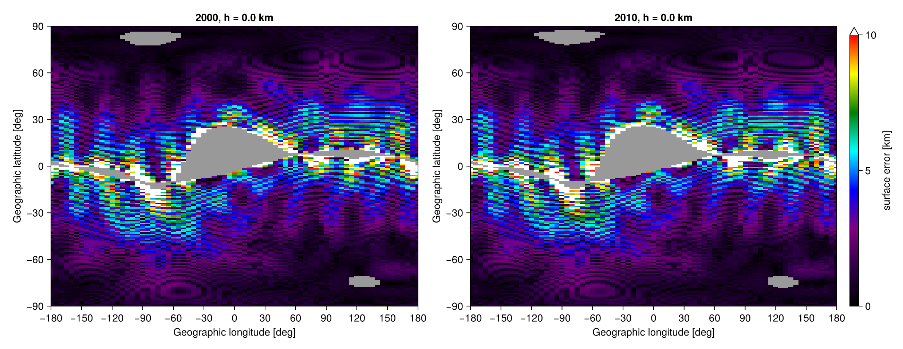

Shepherd 2014 comparison plots
GeoAACGM.jl uses the new AACGM-v2 coefficients introduced by Shepherd (2014) as a fast approximation to the field-line-tracing definition of AACGM.
Per Shepherd's definition (Section 2), AACGM coordinates are obtained by tracing the IGRF field line from the starting point to the centered (best-fit Earth-centered) dipole equator, then assigning the magnetic latitude / longitude from the L-shell and dipole longitude of that crossing.
This example reproduces Figure 5 of Shepherd (2014): the surface-error map of coefficient-based AACGM versus IGRF field-line tracing, at 0 km altitude for 2000 and 2010.
using GeoAACGM
include(joinpath(pkgdir(GeoAACGM), "examples/shepherd2014_comparison.jl"))
plot_coefficient_tracing_comparison()
Each panel is one epoch. Axes are input geographic longitude/latitude. Color is the great-circle distance between AACGM from geoc2aacgm and AACGM inferred from tracing IGRF to the centered dipole equator.
Gray marks the forbidden region: where the IGRF field line reaches Earth before crossing the centered dipole equator (the magnetic dip equator is offset from the dipole equator, especially over the South Atlantic Anomaly), so AACGM is undefined there. White is the high-clip (>10 km), saturating right at the rim of the forbidden region.
Background errors are typically ~1–3 km, consistent with Shepherd's reported "~1 km" residual for the new coefficients.